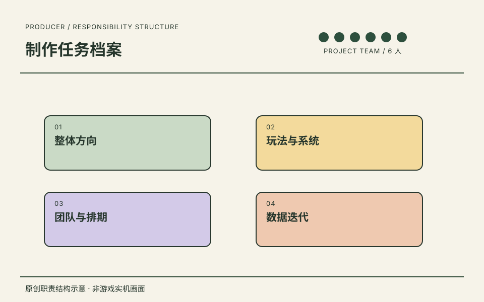

01 / 制作任务档案
北京简游科技有限公司.
从零组建峰值 6 人团队，独立使用 Codex 一周完成核心玩法与表现原型，随后统筹正式研发、双端上线与玩法迭代。负责玩法手感、每日挂件、活动系统及道具判定逻辑。
MY WORK / DESIGN VALUE
我的工作与价值
职责及阶段成果由本人确认；第二关难度飞升模式为既定方向，不归为本人决策。个人原型、团队研发与当前测试结果分别说明。
- 01
从 AI 原型到双端上线
- 具体工作
- 独立使用 Codex，在一周内完成核心玩法及表现原型并持续维护；从零组队，推进微信、抖音于 9 月初上线。
- 工作价值
- 以可运行成果验证设计，再组织团队完成正式研发，连接快速验证和产品交付。
- 02
组建团队并统筹交付
- 具体工作
- 峰值 6 人：制作人本人及 2 名策划、1 名美术、2 名程序；承担任务拆分、排期、跨岗位联调和组内验收。
- 工作价值
- 将玩法、系统与活动需求组织为团队可执行的工作，推进版本落地。
- 03
重构失败压力与玩法节奏
- 具体工作
- 主导第二版由棋盘直接配对转为入槽配对，用槽位占用呈现玩家可预判的风险；负责手感、挂件、活动及道具逻辑。
- 工作价值
- 本人确认第二版测试后，次日留存与人均挑战次数明显提升；仅作定性成果，不补写具体比例。
职责依据本人履历与确认；原图补充设计证据，经营结果另行说明来源与口径。

游戏制作人
从零组建峰值 6 人团队，独立使用 Codex 一周完成核心玩法与表现原型，随后统筹正式研发、双端上线与玩法迭代。负责玩法手感、每日挂件、活动系统及道具判定逻辑。
项目团队共 6 人：制作人本人、2 名策划、1 名美术、2 名程序。正式版美术表现和发行运营由相应岗位承担；个人 AI 原型与团队正式交付分开说明。
工作职责
- 01整体方向
- 02玩法与系统
- 03团队与排期
- 04数据迭代
项目详情
任职记录
从零组建峰值 6 人团队，独立使用 Codex 一周完成核心玩法与表现原型，随后统筹正式研发、双端上线与玩法迭代。负责玩法手感、每日挂件、活动系统及道具判定逻辑。
- 任职公司
- 北京简游科技有限公司
- 角色
- 游戏制作人
- 时间
- 2026.05.18—至今
任职、角色与职责依据本人履历及确认。图示是本站原创的职责结构表达。